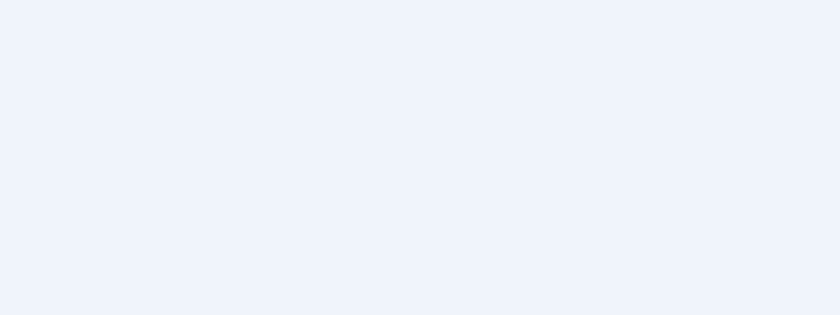

Domain Policies
| 🏠 Tutorial Home | ← Reactions Module | Admin UI Tour → |
| Domain policies let site administrators control which remote domains are permitted to federate with local actors. A policy can allow or block an entire domain, and individual actors or articles can opt out of federation entirely. |
Prerequisites
- Joomla Fediverse installed and configured (see Tutorial 01 and Tutorial 02)
- At least one local actor enabled (see Tutorial 03)
- Administrator access to Components → Fediverse → Policies
Step 1: What Domain Policies Do
Joomla Fediverse evaluates incoming and outgoing federation requests against an ordered list of rules:
| Rule type | Effect |
|---|---|
| Block domain | Refuses all inbound and outbound activities for that domain. Follow requests from blocked domains are automatically rejected. |
| Allow domain | Explicitly permits federation with a domain (useful when the global default is set to deny all). |
| Per-actor opt-out | Removes an actor’s content from federation entirely — no activities are queued and no follows are accepted. |
| Per-content opt-out | Marks a single article as non-federated — the article is not wrapped
in a Create(Note) and never queued for delivery. |
Policies are evaluated in order. The first matching rule wins.
Step 2: Opening the Policies View
 An empty Policies list. No
domain restrictions are active yet.
An empty Policies list. No
domain restrictions are active yet.
Step 3:
Adding a Block Policy for bad-actor.example
- Click New in the toolbar.
- In the Domain field, enter
bad-actor.example. - Set Policy to Block.
- Leave Actor blank to apply the rule site-wide.
- Click Save & Close.
 The Add Policy form. Enter the domain and set the policy type to
Block.
The Add Policy form. Enter the domain and set the policy type to
Block.
The domain is now blocked. Any follow request from
bad-actor.example will be rejected with an
Reject activity. Outbound activities destined for
bad-actor.example are dropped from the delivery queue.

The Policies list after adding the block rule for bad-actor.example.Step 4: Per-User Opt-Out for bob
To disable federation for a specific local actor (for example,
bob does not want his articles to appear on the
Fediverse):
- In Components → Fediverse → Policies, click New.
- Leave Domain blank.
- Set Policy to Block.
- In the Actor field, select
bob. - Click Save & Close.
From this point, bob’s articles are never queued for delivery and his actor profile will not accept new follow requests.
Step 5: Per-Content Opt-Out
To exclude a single article from federation:
- Open the article in the Joomla content editor (Content → Articles).
- Navigate to the Options or Fediverse tab.
- Set Federate this article to No.
- Save the article.
The Content - Fediverse plugin checks this flag before queuing the activity. Articles marked as non-federated are silently skipped.
Step 6: Follow Policy Setting
The global follow policy determines whether remote follow requests are automatically accepted or require manual approval:
- Navigate to Components → Fediverse → Options (or click Options in the toolbar from any Fediverse admin view).
- In the Follow Policy field, choose:
- Auto-accept — Follow requests are accepted immediately (default).
- Manual approval — Follow requests are queued for administrator review.
- Click Save.
Per-actor overrides can be set with the
Joomla policy allows/denies follows for actor Behat steps
in acceptance tests.
Common Issues
| Symptom | Likely cause | Fix |
|---|---|---|
| Block not working immediately | Delivery cache or in-flight scheduler run | Wait for the next scheduler cycle or run tasks manually |
| Per-user opt-out not respected | Content - Fediverse plugin disabled | Enable the plugin at Extensions → Plugins → Content - Fediverse |
| Manual approval queue not visible | No pending follows | Send a test follow from the Peer mock server |